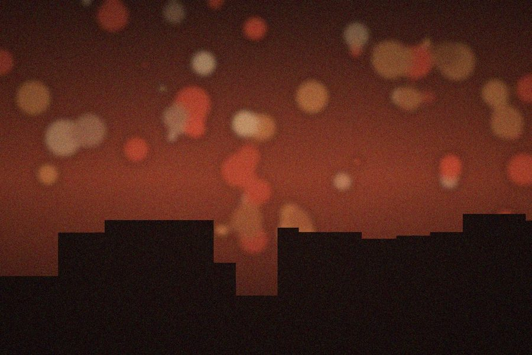

Bia Rocha
em Aniversário da Duda
A Duda chorou no parabéns e ninguém vai deixar ela esquecer. Depois o Caio derrubou o bolo na escada e a gente comeu mesmo assim, sentado no chão da laje até o sol nascer. Próximo ano tem mais.
Laranja Elétrica · Os Postes